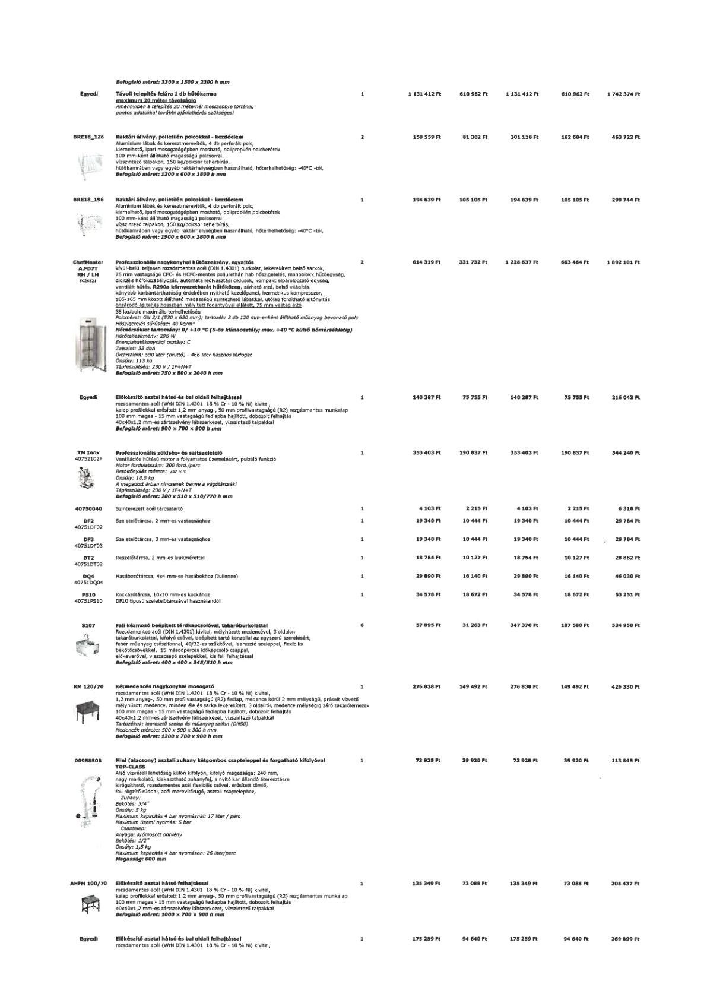

| Tétel | Menny. | Egys. | Anyag e.ár (net HUF) | Díj e.ár (net HUF) | Anyag összesen (net HUF) | Díj összesen (net HUF) | Anyag+Díj összesen (net HUF) |
|---|---|---|---|---|---|---|---|
| Egyedi Távoli telepítés felára 1 db hűtőkamra maximum 20 méter távolságig | 1 | NaN | 1 131 412 | 610 962 | 1 131 412 | 610 962 | 1 742 374 |
| BRE18_126 Raktári állvány, polietilén polcokkal - kezdőelem | 2 | NaN | 150 559 | 81 302 | 301 118 | 162 604 | 463 722 |
| BRE18_196 Raktári állvány, polietilén polcokkal - kezdőelem | 1 | NaN | 194 639 | 105 105 | 194 639 | 105 105 | 299 744 |
| ChefMaster A.FD7T RH/LH 5026521 Professzionális nagykonyhai hűtőszekrény, egyajtós | 2 | NaN | 614 319 | 331 732 | 1 228 637 | 663 464 | 1 892 101 |
| Egyedi Előkészítő asztal hátsó és bal oldali felhajtással | 1 | NaN | 140 287 | 75 755 | 140 287 | 75 755 | 216 043 |
| TM Inox 40752102P Professzionális zöldség- és sajtszeletelő | 1 | NaN | 353 403 | 190 837 | 353 403 | 190 837 | 544 240 |
| 40750040 Szinterezett acél tárcsatartó | 1 | NaN | 4 103 | 2 215 | 4 103 | 2 215 | 6 318 |
| DF2 40751DF02 Szeletelőtárcsa, 2 mm-es vastagsághoz | 1 | NaN | 19 340 | 10 444 | 19 340 | 10 444 | 29 784 |
| DF3 40751DF03 Szeletelőtárcsa, 3 mm-es vastagsághoz | 1 | NaN | 19 340 | 10 444 | 19 340 | 10 444 | 29 784 |
| DT2 40751DT02 Reszelőtárcsa, 2 mm-es lyukmérettel | 1 | NaN | 18 754 | 10 127 | 18 754 | 10 127 | 28 882 |
| DQ4 40751DQ04 Hasábosztótárcsa, 4x4 mm-es hasábokhoz (Julienne) | 1 | NaN | 29 890 | 16 140 | 29 890 | 16 140 | 46 030 |
| PS10 40751PS10 Kockázótárcsa, 10x10 mm-es kockához | 1 | NaN | 34 578 | 18 672 | 34 578 | 18 672 | 53 251 |
| S107 Fali kézmosó beépített térdkapcsolóval, takaróburkolattal | 6 | NaN | 57 895 | 31 263 | 347 370 | 187 580 | 534 950 |
| KM 120/70 Kétmedencés nagykonyhai mosogató | 1 | NaN | 276 838 | 149 492 | 276 838 | 149 492 | 426 330 |
| 00958508 Mini (alacsony) asztali zuhany kétgombos csapteleppel és forgatható kifolyóval | 1 | NaN | 73 925 | 39 920 | 73 925 | 39 920 | 113 845 |
| AHFM 100/70 Előkészítő asztal hátsó felhajtással | 1 | NaN | 135 349 | 73 088 | 135 349 | 73 088 | 208 437 |
| Egyedi Előkészítő asztal hátsó és bal oldali felhajtással | 1 | NaN | 175 259 | 94 640 | 175 259 | 94 640 | 269 899 |
